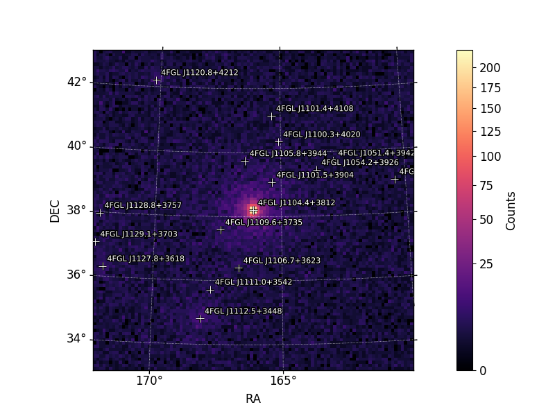

Guide to Fermipy
This guide gives a general introduction to Fermipy and how it can be used to make sepectral energy density diagrams and light-curves. Along the way I note a variety of issues and solutions I have faced and solved so your code has fewer issues.
What is Fermipy?
Fermipy is a set of analysis tools in python tailored to analyze data from the Fermi Large Area Telescope (Fermi-LAT), one of two instruments aboard the Fermi orbital satellite. This Guide will go over the three analysis methods I am most familiar with, SED, Light-curve, and bayesian blocks.
Data Acquisition
The data for a Fermi-LAT can be downloaded from the official website here. Stick with J2000 as your cordinate system. Make sure you plug in the observation dates in accordance with the associated time system. The safe and most accurate energy range for Fermi is between 100 and 513000 MeV. Make sure the space craft file box is checkmarked. The search radius is 15 degrees by default and defines the area around your source that you want data for.
A general overview of Fermipy analyses
Spectral Energy Density (SED)
Given a photon has a continuous distribution of energies it could possess we can sort a source's photon data set into groups (bins) of similar energies. Each bin can be translated into a total energy, graphed, and fit with a model. This model's fancy name is a Spectral Energy Distribution or SED for short. With an SED we know approximately how much energy flux is emitted from a source at a specific energy. SEDs are useful for creating a lightcurve and understanding the basic properties of the source in question.
Figure 1. This is an SED of Markarian 421 fitted with a logparabolic model.
Light-curve
Knowing how many photons a source emits is not as useful as knowing at which energies and with what intensity a source emits at. We can place a source's photon data into time bins (day/week/month/etc bins) and use the SED to transform a bin's total photons into a total energy value. Performing this operation over a data set produces a flux versus time graph called a lightcurve. A variety of analses can be performed on a lightcurve to probe patterns within a sources emissions.
Figure 2. In blue is a one-day-binned light-curve over 11 years for the blazar Markarian 421. Baysian blocks are identified in yellow, where each block represents a period of time with average flux 5 standard deviations away from each adjacent period of time.
The Code
With the program properly installed, Fermipy requires 3 sets of files that must be tailored for your particular analysis. The first set of files is the data. These files are split between a set of photon files, which record photon events, and a spacecraft file, which record Fermi-LAT's position at each instance of a photon event. The data should be placed into its own folder along with a text file containing the absolute path for each photon file. This text file should contain the following:
In this example, instead of using the absolute path for each photon file, I used the relative path, from the folder where the script will be run to the folder where the data is stored. Either path works but both require attention to using the correct path.
The Configuration File
DOWNLOAD CONFIGURATION FILEThe second file is the configuration file (config.yaml) and contains a number of parameters that will be used in the analysis. The evfile contains the relative or absolute path to the text file described above and will allow Fermipy to access the photon files. The scfile contains the absolute or relative path to the spacecraft file. The roiwidth stands for "region of interest width" and marks the area around your source that you want to analyze. The photon data and spacecraft file can be used to make a 2D sky map where the "x-axis" and "y-axis" are defined by orthogaonal angles. The binsz refers to the spatial bin size on this 2D map. The binsperdec parameter stands for "bins per decade (of energy)" and defines the number of bins of energy desired for each decade (power of 10) of energy. The tmin and tmax refer to the start and end time associated with the data. These times are formatted in fermi seconds, and a timee converter from calender date to Fermi seconds (among other time conversions) can be found at this link.The coordinates of the source, right ascension and declination, are placed in ra and dec respectively. The files for the galactic diffuse model (galdiff), isotropic model (isodiff), and catalog (catalogs) should have the correct absolute paths placed in the configuration. The outdir contains the name of the folder where all output files will be placed. The logfile contains the name of the file that will be used to output all dialog produced by the python script. The outdir underneath the lightcurve section is the name of the folder where all lightcurve output files will be places, which is subsequently placed in the the fileio outdir previusly mentioned. The binsz in the lightcurve section refers to the time bins, in seconds, that will be used in the Lightcurve analysis. For any subsequent clarification, more information, and more options with the configuration file visit this link.
The Python Script
DOWNLOAD PYTHON SCRIPTThe third file is the python sript that will run the analysis. The example code below will contain script for the SED and light-curve analysis. Most relevant information is written in the physical code so I recommend reading through it first. I also strongly recommend reading through the "Data Preparation" section of my senior thesis, located under RESEARCH / PROJECTS, titled "Multiwavelength Analysis of the Blazar Markarian 421", as the fitting process and general theory for SEDs and light-curves are well documented there. For additional information or commands not covered here or in the paper, visit this link.
In this example, instead of using the absolute path for each photon file, I used the relative path, from the folder where the script will be run to the folder where the data is stored. Either path works but both require attention to using the correct path. The second file is the configuration file and contains a number of parameters that
Output Images
Figure 3. Using the 2D spatial bins described in the configuration file, Fermipy compiles a 3D photon counts map of all sources within the region of interest.
Figure 4. Using models for each source within the region of interest, as specified in the Fermi catalog, a 3D model of the photon counts map is produced.
Figure 5. Summing the photon counts along one axis of the 3D counts map results in a 2D counts map. This image has both all raw counts and all source models within the region of interest.
Figure 6. This is identical to the previous figure but the photon counts are summed up along the opposite axis.
Figure 7. This is the counts spectrum for all sources as described in my thesis on page 8 linked here. As previously stated, I recommend reading through this portion of my thesis as it provides more specific information for counts spectrums, spectral energy densities, and light-curves.
Figure 8. This is an SED of Markarian 421 fitted with a logparabolic model.
Figure 9. Let us take the final SED fit and its associated 3D counts map and subtract the true counts map. Should the model have a perfect fit this difference should produce a counts map with zero counts in each bin. This quantity is called the residual. Using the same process but with each bin's errors leaves us with a residual significance map as seen here. A good fit has a residual significance map with values no larger than ~(2) and no smaller than ~(-2). Should large significances exist here, you may have discovered a new source or your fit is somehow wonky.
Figure 10. This is a residual Test Significance (TS) map. The same priniples described in Figure 9 apply here but with TS instead of significance. A more detailed explanation of TS can be found in the same section of my thesis as described previously.
No Good Time Intervals
Occasionally when you run the code for a light-curve analysis and your bins are on the order of a day you will find an error stating "no GTI found." This acronym (GTI) stands for "Good Time Interval." Fermipy will break whenever it encounters a time period with no GTI. This is problematic and steps should be taken to maneuver around these time periods. Some of these time periods correspond to times when the Fermi Large Area Telescope was physically down (maybe emotionally too). These periods are generally less than a day and can be found here. Should these no GTI periods not correspond to any of the periods found in the linked website then your data files were most likely corrupted or compiled incorrectly when you downloaded them. So the data files should be re-downloaded.
Figure 11. The GTI is plotted against itself on the left and the times associated with a measured photon are plotted against itself on the right. We have a conundrum since we have data during a supposed period of time with no GTI. After re-downloading the data this discrepency disapeared.
Last remarks
Good Luck! I hope this guide helped a bit. And as a last piece of advice, I recommend saving every coding error and subsequent solution you come across in an xl sheet. I believe it will save you a lot of effort in the long run when you run into a similar error later on.